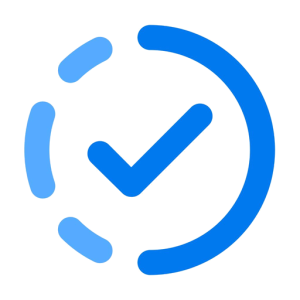

Due This Week
A free, private to-do sidebar for Canvas LMS and Blackboard.
See everything due this week at a glance. Due This Week adds a clean to-do list and progress rings to your school dashboard, so you always know what's next.
Features
- Weekly to-do list built from your real assignments and due dates
- Progress rings for each course, in your dashboard colors
- Check items off with one click, and add your own custom tasks
- A streak that counts the days since you last missed an assignment (Canvas)
- A “due Later” section for work due in the next two weeks, with headings you can collapse
- Day, three-day, week, or month views, plus a rolling view
- Optional Gradescope integration
- Ungraded-work view for teachers and TAs
Private by design
No accounts, no tracking, and no servers. The extension talks only to your school's own site, using the login you already have. Read the privacy policy.
Get it
Free on Microsoft Edge Add-ons. Want to look first? Try the live demo with sample data.
Help and feedback
Found a bug or have an idea? Open an issue on GitHub.